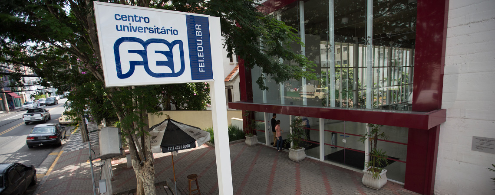
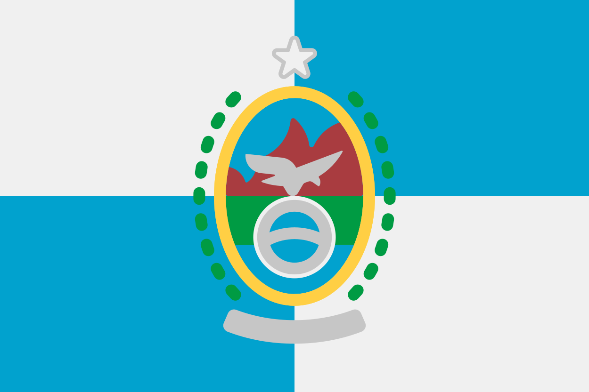
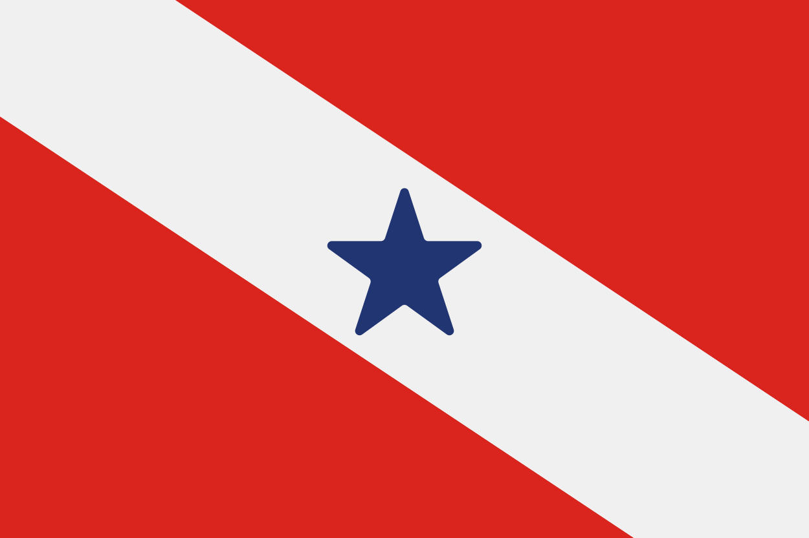

Quem sou eu ?

Meu nome é João Felipe, tenho 19 anos de idade e curso Ciência da Computação no Centro Universitário FEI. Minha paixão com a tecnologia começou em 2020, ano da pandemia de Covid-19, quando passei a ter mais contato com o notebook devido às aulas onlines. Um dos motivos que me fizeram ingressar no ramo de TIC foi a constante evolução dos recursos tecnológicos e como são usados na vida das pessoas.
Minhas redes sociais
Esta é a faculdade onde eu atualmente estudo. Eu a escolhi por ser bem conceituada e ser próxima da minha casa. Estudo nela desde de agosto de 2025.
Fachada do Campus Liberdade

❤ Paixões futebolísticas ⚽
Eu me considero fã de futebol desde criança, como é de tradição do pequeno brasileiro, e o primeiro time que me identifiquei foi o Corinthians. Entretanto, como meu pai era vascaíno e eu acompanhava os jogos do clube, decidi torcer também para o Vasco da Gama. Apesar do sofrimento que é acompanhar o Vascão, o considero como meu principal time do coração - o outro é o Paysandu, de Belém do Pará, o qual meus pais torcem. Tenho simpatia por vários outros clubes do Brasil, mas torcer mesmo é só pelo Vasco e pelo Paysandu.
Localização do estádio São Januário

Localização do estádio Leônidas Sodré de Castro

 \ JoaoCarvalho1912 (Kadacar) -
\ JoaoCarvalho1912 (Kadacar) -  \ João Felipe Carvalho -
\ João Felipe Carvalho -